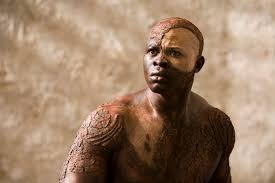

Caliban: The slave
Bio
Caliban, the son of the witch Sycorax, is an indiginous inhabitant of the island. He is portrayed as a cunning but pathetic character, enslaved and mistreated by Prospero.
Key Quotes
"This island's mine, by Sycorax my mother, Which thou tak'st from me."
Character Analysis
Caliban represents the darker side of human nature but also evokes sympathy as a victim of colonization and mistreatment, challenging the audience's perceptions of savagery and civilization.
Role in The Tempest
I've never fully understood Caliban, as best I can tell he touches on issues related to colonialism while also showing one facet of how one might respond to mistreatment.